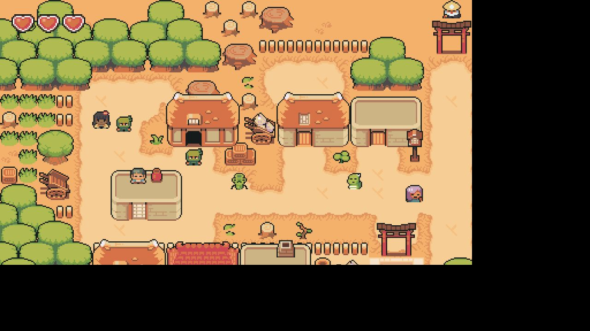

JavaScript · HTML Canvas
Ninja Adventure
Overview
Explore a pixel-art village with character movement, collisions and animated enemies.
The character moves through a level whose layout turns jumping, timing, and position into the main challenge. Platforms and obstacles define a route, while the camera and artwork keep the space readable during movement. The overview presents the character and level together; pickups, enemies, or other mechanics are described only where they are identified in this version’s summary.
What it includes
- Character movement
- Level traversal
- Obstacle navigation
